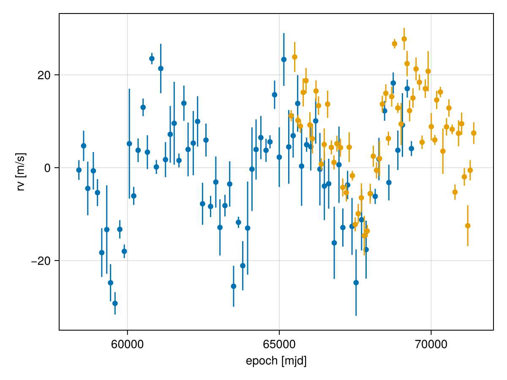
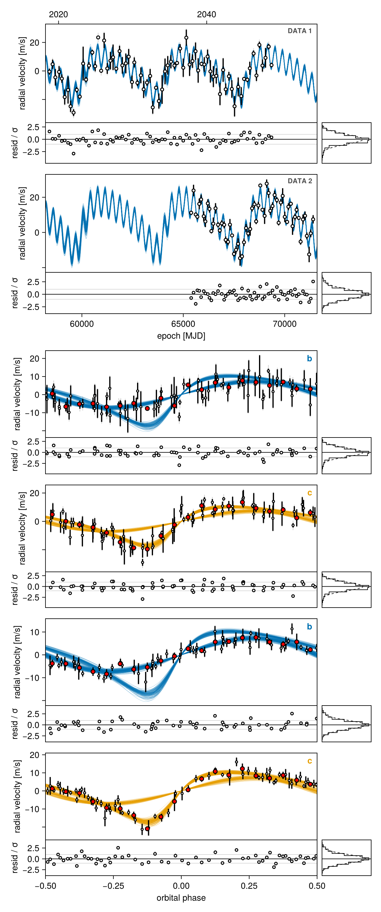
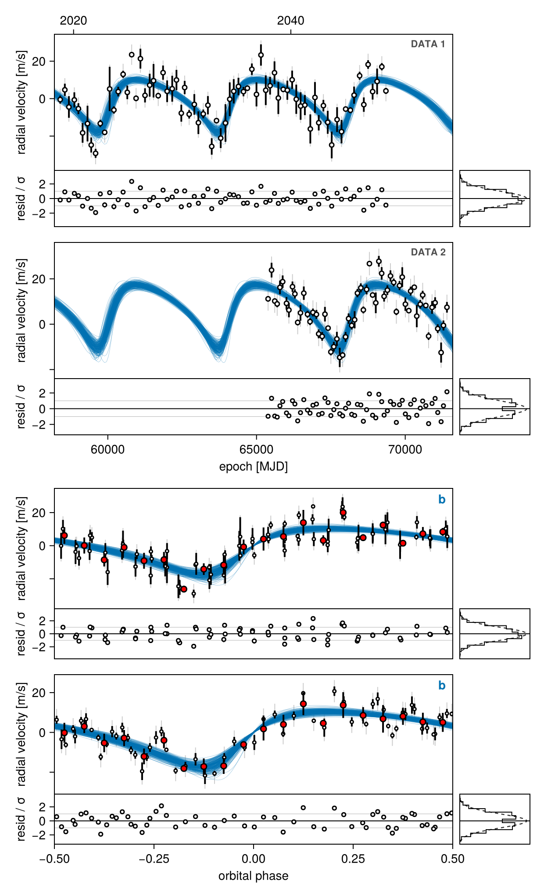
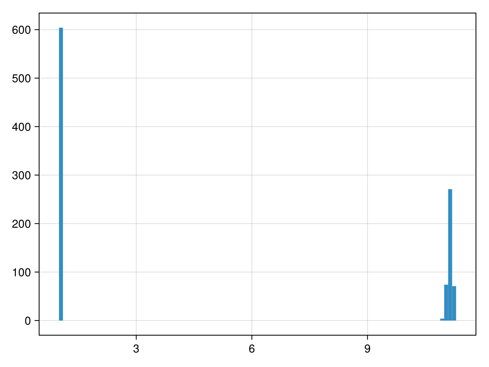
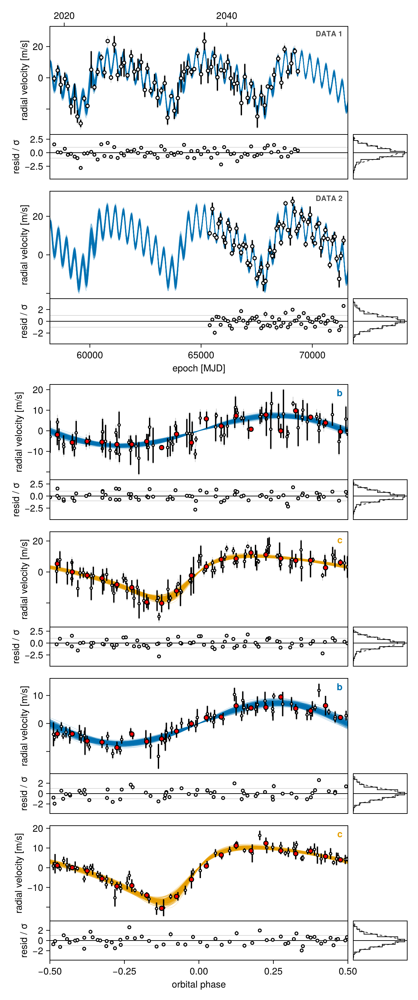
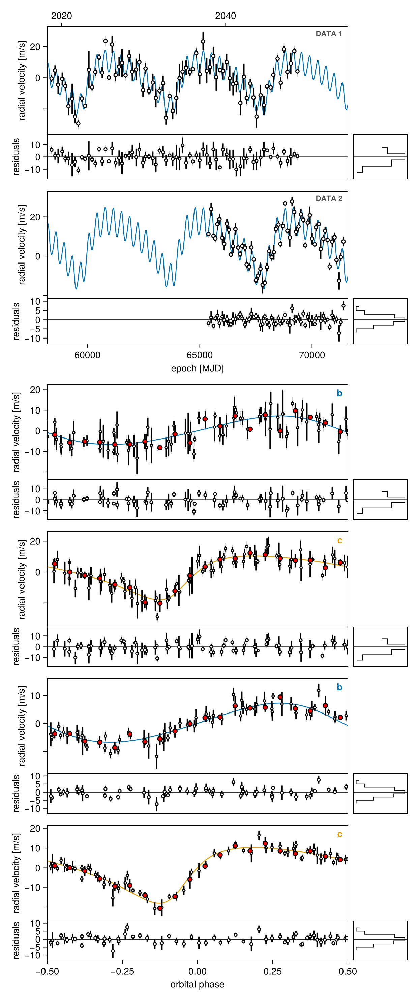
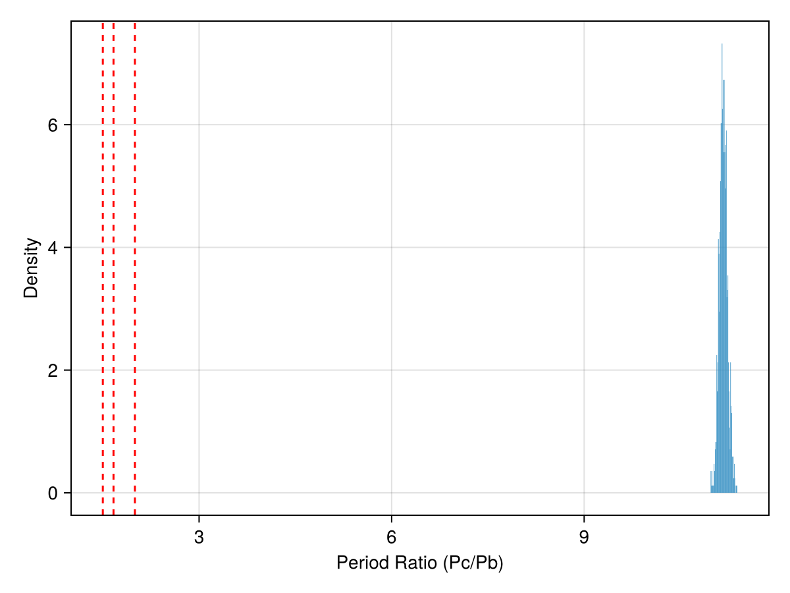

Multi-Planet RV Fits
This tutorial shows how to perform a multi-planet RV fit, and compare the bayesian evidence between the two models.
octofit_pigeons and Pigeons.stepping_stone are how Octofitter computes a log Bayesian evidence, and octofit_pigeons's methods live in a package extension — so pkg> add Pigeons and using Pigeons are required before the sampling blocks on this page, or they fail with a MethodError. If you only want the posteriors and not the evidence, octofit(model) (HMC) samples these models fine.
using Octofitter
using OctofitterRadialVelocity
using CairoMakie
using PairPlots
using Distributions
using PlanetOrbitsTo begin, we create simulated data. We imagine that we have two different instruments.
A synthetic system is a real PlanetOrbits.System: the star and both planets have masses, and the hierarchy says what orbits what. Solving it once gives the star's reflex velocity directly, with no need to sum radvel over each planet by hand.
using Random
Random.seed!(1)
star = PlanetOrbits.Body(mass=1.0, name=:A) # M⊙
p_b = PlanetOrbits.Body(mass=0.25e-3, name=:b) # M⊙
p_c = PlanetOrbits.Body(mass=1.0e-3, name=:c) # M⊙
truth = PlanetOrbits.System(
(star, p_b, p_c),
(
PlanetOrbits.Orbit(p_b, about=star; a=1.0, e=0.05, ω=1pi/4, i=pi/2, Ω=0.0, tp=58800),
PlanetOrbits.Orbit(p_c, about=(star, p_b); a=5.0, e=0.40, ω=1pi/4, i=pi/2, Ω=0.0, tp=59800),
)
)
"The star's reflex velocity against the system barycentre, in m/s."
function reflex_rv(epochs)
traj = orbitsolve(truth, epochs)
return [radvel(traj[k], :A, barycentre(truth)) for k in eachindex(epochs)]
end
epochs1 = (58400:150:69400) .+ 10 .* randn.()
rv1 = reflex_rv(epochs1)
rvlike1 = MarginalizedRVObs(
Table(epoch=epochs1, rv=rv1 .+ 4 .* randn.(), σ_rv=[4 * abs(randn()) + 1 for _ in eachindex(epochs1)]);
target=:A, ref=Barycentre,
name="DATA 1",
variables=@variables begin
jitter ~ LogUniform(0.1, 100) # m/s
end
)
epochs2 = (65400:100:71400) .+ 10 .* randn.()
rv2 = reflex_rv(epochs2)
rvlike2 = MarginalizedRVObs(
Table(epoch=epochs2, rv=rv2 .+ 2 .* randn.() .+ 7, σ_rv=[2 * abs(randn()) + 1 for _ in eachindex(epochs2)]);
target=:A, ref=Barycentre,
name="DATA 2",
variables=@variables begin
jitter ~ LogUniform(0.1, 100) # m/s
end
)
fig = Figure()
ax = Axis(
fig[1,1],
xlabel="epoch [mjd]",
ylabel="rv [m/s]"
)
Makie.scatter!(ax, rvlike1.table.epoch, rvlike1.table.rv)
Makie.errorbars!(ax, rvlike1.table.epoch, rvlike1.table.rv, rvlike1.table.σ_rv)
Makie.scatter!(ax, rvlike2.table.epoch, rvlike2.table.rv)
Makie.errorbars!(ax, rvlike2.table.epoch, rvlike2.table.rv, rvlike2.table.σ_rv)
fig
It analytically marginalizes out each instrument's radial velocity zero point. It requires target= (with ref= defaulting to Barycentre), and it errors if you declare an offset variable — the point of the type is that there is no offset parameter left to fit.
Two Planet Model
Octofitter uses the following unit conventions:
- Mass: solar masses everywhere (
mjupandmearthare plain constants:mass = 5.3mjup) - Semi-major axis (
a): AU - Period (
P): days, when given as an orbital element - Time of periastron (
tp): MJD (days) - Epochs: MJD (days)
In this tutorial we sample a period in years, because that is what the literature quotes, and convert to the days that the P element wants:
P_yrs ~ Uniform(0, 100)
P = P_yrs * year2day_julianNote that you supply either a or P, never both — Octofitter derives one from the other using the orbit's own gravitating mass.
A Julian year is 365.25 days exactly, by IAU definition, and is the one a published period in years means. The period of a 1 M⊙ / 1 AU orbit under the IAU nominal constants is 365.2568983840419 days — a different number, exported as PlanetOrbits.kepler_year_to_julian_day_conversion_factor, and the one Kepler's third law works in.
They differ by 1.9 × 10⁻⁵, which is invisible on a loosely constrained orbit and badly wrong on a short, well-measured one. Convert a quoted period with the exported year2day_julian; the Kepler year only belongs inside √(a³/M), where Octofitter already applies it for you.
You state the hierarchy with about=, and the gravitating mass of each orbit is the total mass of the bodies it binds:
about=A— the planet orbits the star alone (astrocentric).about=(A, b)— the planet orbits the barycentre of the star and the inner planet (Jacobi), so its orbit's mass isM_A + M_b + M_c.
Below, b is the inner planet and c the outer one, so c is placed about (A, b).
A = Body(
name="A",
variables=@variables begin
mass = 1.0 # M⊙
end
)
planet_b = Body(
name="b",
about=A,
variables=@variables begin
# RV-only: the inclination and node are unconstrained, so fix them.
i = pi/2
Ω = 0.0
e ~ Uniform(0,0.999999)
ω ~ Uniform(0,2pi)
mass ~ Uniform(0, 10mjup) # M⊙
P_yrs ~ Uniform(0, 100)
P = P_yrs * year2day_julian # the `P` element is in days
τ ~ Uniform(0,1.0)
tp = τ*P_yrs*year2day_julian + 58400
end
)
planet_c = Body(
name="c",
about=(A, planet_b), # Jacobi: c orbits the A+b barycentre
variables=@variables begin
i = pi/2
Ω = 0.0
e ~ Uniform(0,0.999999)
ω ~ Uniform(0,2pi)
mass ~ Uniform(0, 10mjup) # M⊙
P_yrs ~ Uniform(0, 100)
P = P_yrs * year2day_julian
τ ~ Uniform(0,1.0)
tp = τ*P_yrs*year2day_julian + 58400
end
)
sim_2p = System(
name="sim_2p",
bodies=[A, planet_b, planet_c],
observations=[rvlike1, rvlike2],
)
model_2p = Octofitter.LogDensityModel(sim_2p)LogDensityModel for System sim_2p of dimension 12 and 135 epochs with fields .ℓπcallback and .∇ℓπcallback
Sample from the posterior
using Pigeons
results_2p, pt_2p = octofit_pigeons(model_2p, n_rounds=10)(chain = MCMC chain (1024×25×1 Array{Float64, 3}), pt = PT(checkpoint = false, ...))Plot the RV curve, the residuals, and a phase-folded panel per planet — one call to octoplot for the posterior spread, or rvplot for the single-draw summary with every instrument on one axis:
octoplot(model_2p, results_2p)
One Planet Model
We now create a new system object that only includes one planet (we dropped c, in this case). Because each body's @variables block only reads variables it names, planet_b can be reused as-is:
sim_1p = System(
name="sim_1p",
bodies=[A, planet_b],
observations=[rvlike1, rvlike2],
)
model_1p = Octofitter.LogDensityModel(sim_1p)LogDensityModel for System sim_1p of dimension 7 and 135 epochs with fields .ℓπcallback and .∇ℓπcallback
Sample from the posterior
using Pigeons
results_1p, pt_1p = octofit_pigeons(model_1p, n_rounds=10)(chain = MCMC chain (1024×16×1 Array{Float64, 3}), pt = PT(checkpoint = false, ...))Plot RV curve, phase folded curve, and binned residuals:
octoplot(model_1p, results_1p)
Model Comparison: Bayesian Evidence
Octofitter with Pigeons directly calculates the (natural) log Bayesian evidence using the "stepping stone" method. This should be more reliable than even nested sampling, and certainly more reliable than approximate methods like the BIC/WAIC etc.
Z1 = stepping_stone(pt_1p)
Z2 = stepping_stone(pt_2p)
ln_BF₁₀ = Z2-Z150.377310900270174Here is a standard guideline you can use to interpret the evidence:
| Log Bayes Factor ln(BF₁₀) | Interpretation |
|---|---|
| > 3.00 | Extreme evidence for $H_A$ |
| 1.61 - 3.00 | Very strong evidence for $H_A$ |
| 1.10 - 1.61 | Strong evidence for $H_A$ |
| 0.69 - 1.10 | Moderate evidence for $H_A$ |
| 0 - 0.69 | Anecdotal evidence for $H_A$ |
| 0 | No evidence |
| -0.69 - 0 | Anecdotal evidence for $H_B$ |
| -1.10 - -0.69 | Moderate evidence for $H_B$ |
| -1.61 - -1.10 | Strong evidence for $H_B$ |
| -3.00 - -1.61 | Very strong evidence for $H_B$ |
| < -3.00 | Extreme evidence for $H_B$ |
As you can see, the evidence for there being two planets is "extreme" in this case. Try adjusting the masses of the two planets and see how this changes!
Parameterizations
When using the evidence for model comparisons, a model with more specific priors will have more evidence than an quivalent model with broad priors.
In our two planet model above, we made two exactly equivalent planets. If you inspect the chains, you may notice that the two planets often flip back and forth – sometimes b has the longer period, and sometimes c does.
For example, here is a histogram of the period of planet b:
hist(vec(results_2p[:b_P_yrs]), bins=100)
We can refine the two planet model a bit by adjusting the priors such that planet c always has a longer period than planet b.
This will make analysis a little more straightforward, but crucially it will also increase the evidence of this model, by approximately halving the prior volume–-thus making a more specific prediction.
There are several ways we could do this. Here, we add a "nominal period" variable and reparameterize the two planets as ratios of this nominal period.
Octofitter also ships an OrbitOrderPrior, which enforces a_b < a_c directly by rejecting draws where the ordering is violated. It goes in the system's observations= list: observations=[rvlike1, rvlike2, OrbitOrderPrior(planet_b, planet_c)]. The reparameterization below is usually the better-conditioned choice for evidence work, because it shrinks the prior volume instead of truncating it.
planet_b_v2 = Body(
name="b",
about=A,
variables=@variables begin
i = pi/2
Ω = 0.0
e ~ Uniform(0,0.999999)
ω ~ Uniform(0,2pi)
mass ~ Uniform(0, 10mjup) # M⊙
P_yrs = system.P_yrs_nom * system.P_ratio_b
P = P_yrs * year2day_julian
τ ~ Uniform(0,1.0)
tp = τ*P_yrs*year2day_julian + 58400
end
)
planet_c_v2 = Body(
name="c",
about=(A, planet_b_v2),
variables=@variables begin
i = pi/2
Ω = 0.0
e ~ Uniform(0,0.999999)
ω ~ Uniform(0,2pi)
mass ~ Uniform(0, 10mjup) # M⊙
P_yrs = system.P_yrs_nom * system.P_ratio_c
P = P_yrs * year2day_julian
τ ~ Uniform(0,1.0)
tp = τ*P_yrs*year2day_julian + 58400
end
)
sim_2p_v2 = System(
name="sim_2p_v2",
bodies=[A, planet_b_v2, planet_c_v2],
observations=[rvlike1, rvlike2],
variables=@variables begin
P_yrs_nom ~ Uniform(0, 100)
P_ratio_b ~ Uniform(0, 0.5)
P_ratio_c ~ Uniform(0.5, 1)
end
)
model_2p_v2 = Octofitter.LogDensityModel(sim_2p_v2)LogDensityModel for System sim_2p_v2 of dimension 13 and 135 epochs with fields .ℓπcallback and .∇ℓπcallback
Sample from the posterior
using Pigeons
results_2p_v2, pt_2p_v2 = octofit_pigeons(model_2p_v2, n_rounds=10)(chain = MCMC chain (1024×28×1 Array{Float64, 3}), pt = PT(checkpoint = false, ...))The planet with the wider orbit is now consistently plotted in the same panel (meaning that planet b and c are no longer trading back and forth):
octoplot(model_2p_v2, results_2p_v2)
If we look again at the log-evidence, we see that this parameterization (Z3) is even more favoured. This is because this small change in parameterization makes considerably
Z1 = stepping_stone(pt_1p)
Z2 = stepping_stone(pt_2p)
Z3 = stepping_stone(pt_2p_v2)
Z1, Z2, Z3(-461.72388335891253, -411.34657245864236, -409.1445669717801)All the plots above overlay many posterior draws. To inspect one draw at a time — for example the maximum a-posteriori sample — slice the chain:
i_map = argmax(vec(results_2p_v2[:logpost]))
octoplot(model_2p_v2, results_2p_v2[i_map:i_map, :, :])
rvplot_animated automates exactly that sweep: it rebuilds the RV figure for N single-draw slices of the chain and records them as a video, so every panel — including the phase folds, which move with the drawn period — is that draw's own.
Octofitter.rvplot_animated(model_2p_v2, results_2p_v2; N=50, fname="rv-posterior.mp4")The slicing above is still the building block if you want a different figure per frame: loop over draws and save each one (octoplot(model, chain[i:i, :, :]; fname="frame-$i.png")).
Analyzing Period Ratios
For studies of mean motion resonances, it's useful to examine the posterior distribution of the period ratio between planets. You can compute this directly from the chains:
# Extract period samples for each planet
P_b_samples = vec(results_2p_v2[:b_P_yrs])
P_c_samples = vec(results_2p_v2[:c_P_yrs])
# Compute period ratio (outer/inner)
period_ratios = P_c_samples ./ P_b_samples
# Plot histogram
fig = Figure()
ax = Axis(fig[1,1], xlabel="Period Ratio (Pc/Pb)", ylabel="Density")
hist!(ax, period_ratios, bins=50, normalization=:pdf)
# Mark common resonances
vlines!(ax, [2.0, 3/2, 5/3], color=:red, linestyle=:dash, label="Common MMRs")
fig
This approach works for any multi-planet model and can help identify potential mean motion resonances.
Note about the evidence ratio
The pigeons method returns the log evidence ratio. If the priors are properly normalized, this is equal to the log evidence.
In other cases (e.g. if using ObsPriorONeil2019 or UniformCircular) you may need to calculate the log_Z0 term yourself. This can be done as follows:
prior_model = Octofitter.LogDensityModel(Octofitter.prior_only_model(model_1p.system, exclude_all=true))
_, pt_prior = octofit_pigeons(prior_model, n_rounds=10) # should be very quick!
log_Z0 = stepping_stone(pt_prior)0.004120462244365797It drops every prior-shaped term, including the UnitLengthPrior that keeps each UniformCircular variable's (x, y) pair off the origin. Such a model is fine for computing a normalizing constant, but is not a model you should do inference with.
Subtract this from the stepping stone value to get the true evidence:
log_Z1_over_Z0 = stepping_stone(pt_1p)
log_Z1 = log_Z1_over_Z0 - log_Z0-461.7280038211569